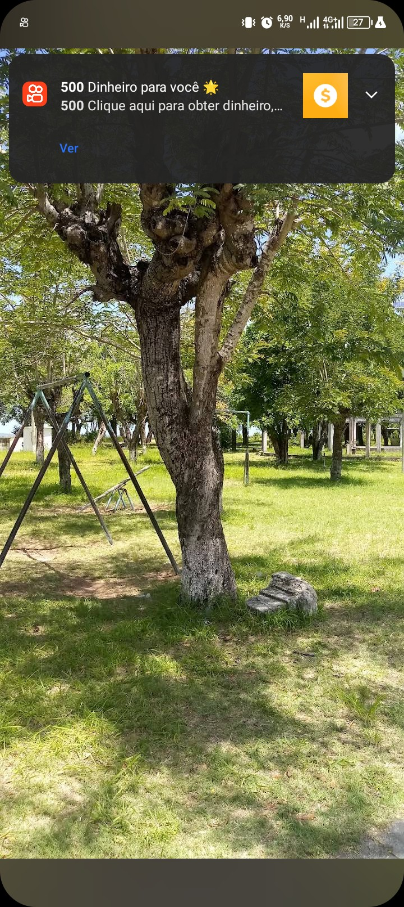
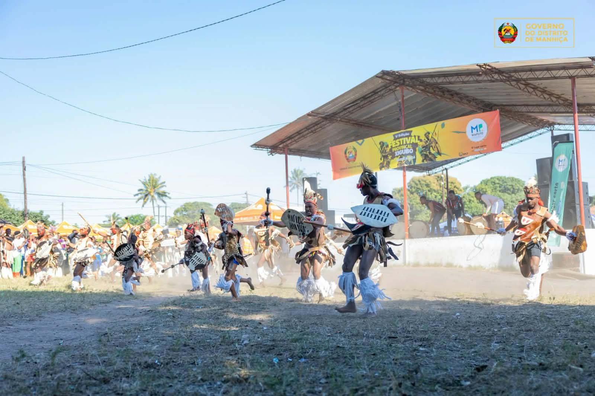
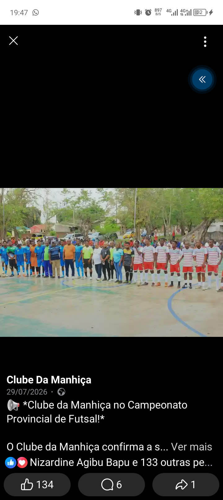
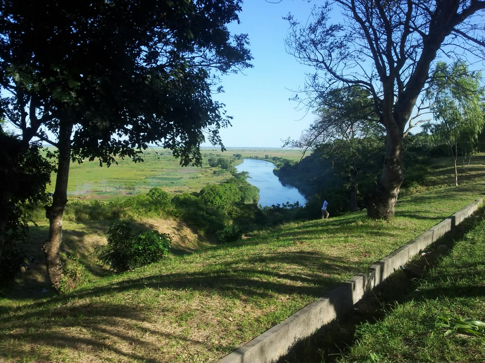
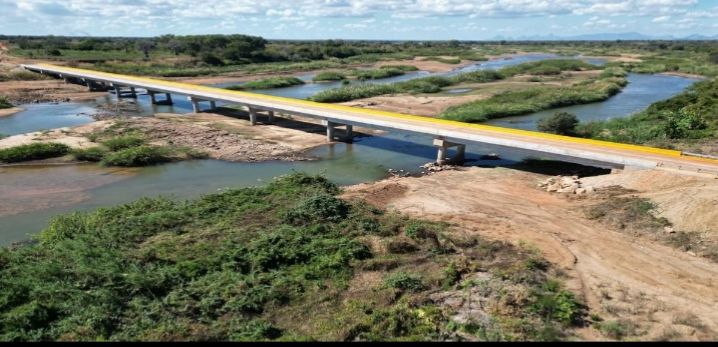

Explorar a Manhiça
Jardins, campos de futebol e paisagens para relaxar, jogar e fotografar.

Jardim Municipal
Espaço verde para descansar à sombra.
Jardins e parques
Praça 18 de Maio
Ponto de encontro da vila.
Jardins e parquesCampo Municipal da Manhiça
Principal campo para jogos e eventos.
Campos e desporto
Campos de bairro
Jogos e treinos locais.
Campos e desporto
Margem do Rio Incomáti
Paisagem calma para passeio ao entardecer.
Paisagens e rio
Ponte sobre o Incomáti
Um dos melhores sítios para fotografias.
Paisagens e rio